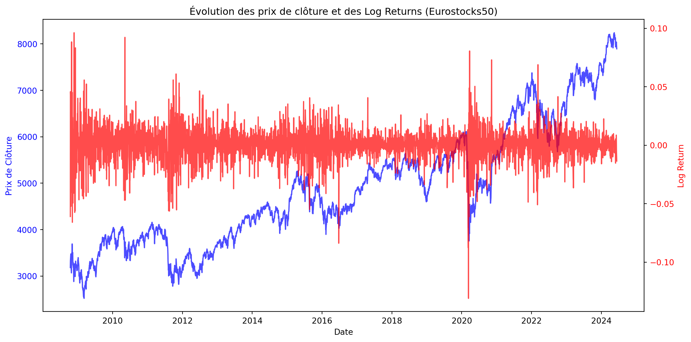
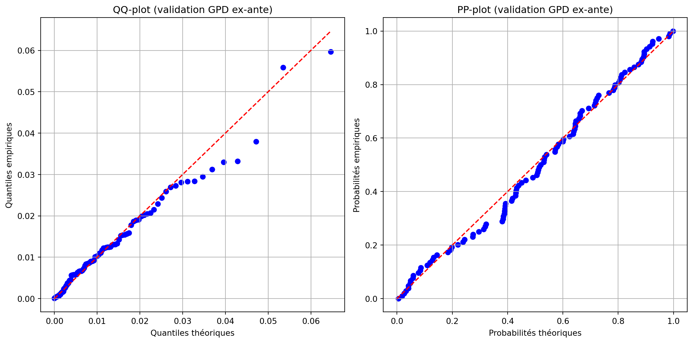
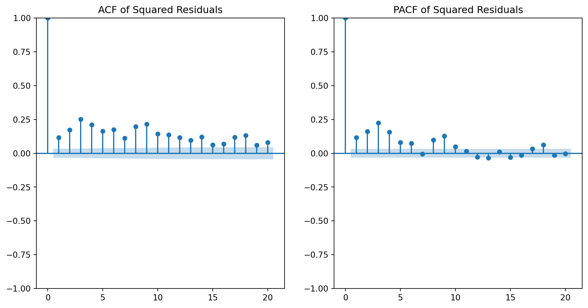
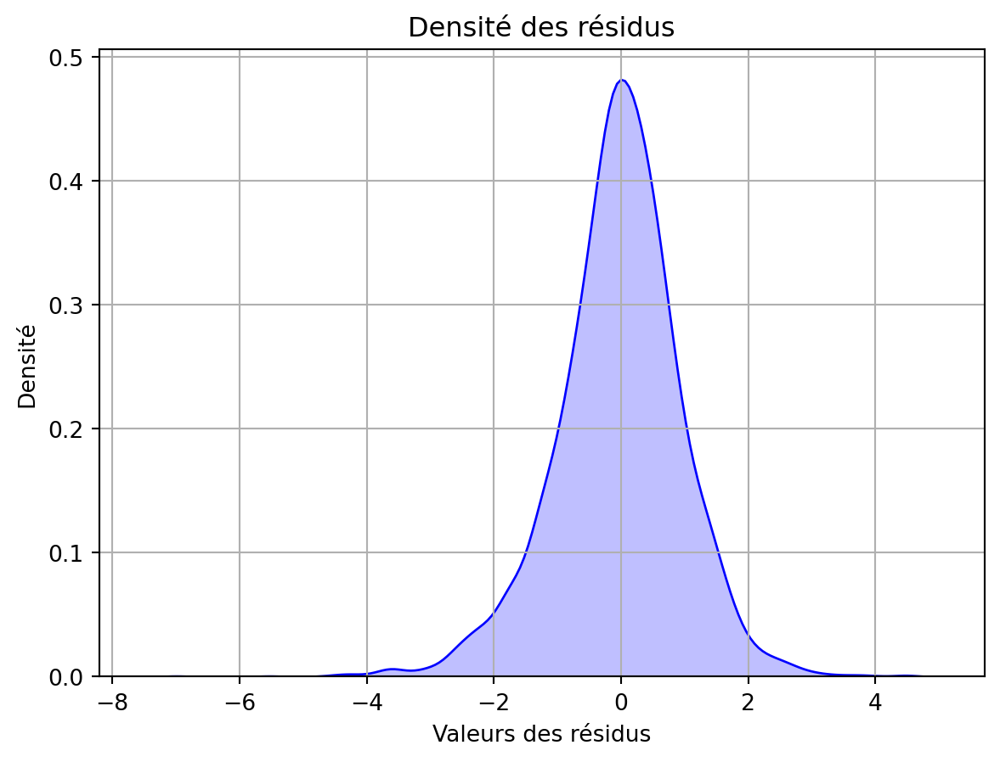
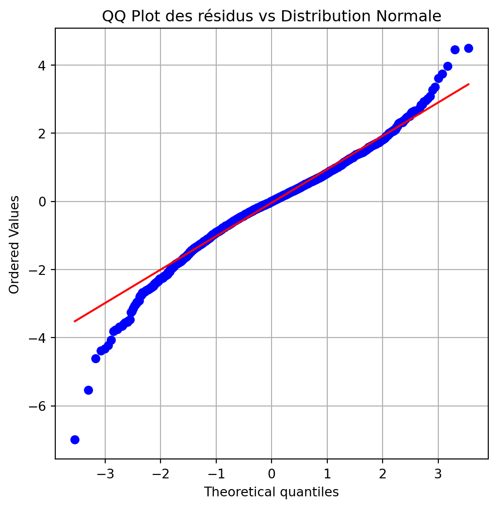
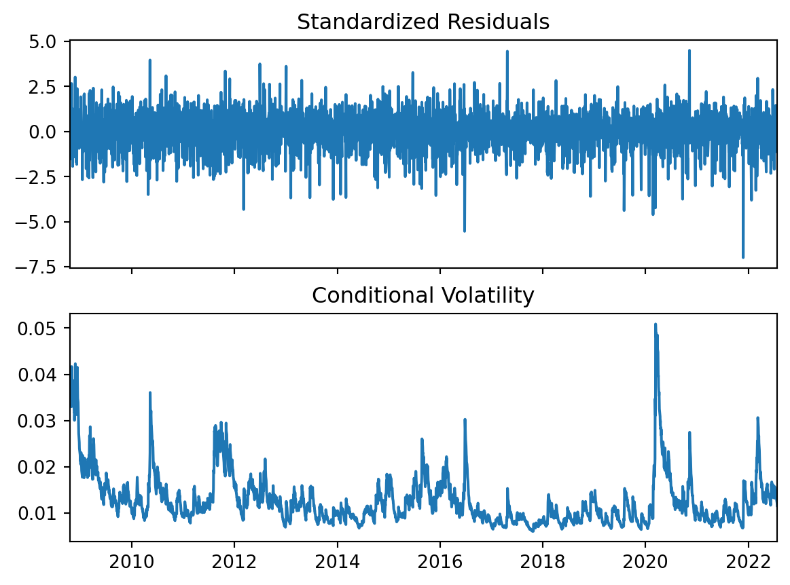

Ce projet a pour objectif d’étudier la mesure du risque de pertes extrêmes à partir d’une série historique de log-rendements boursiers, en combinant :
des approches classiques de VaR non paramétrique et gaussienne,
des méthodes plus avancées basées sur la pondération EWMA,
des lois de probabilité à queues épaisses (Skew-Student),
la théorie des valeurs extrêmes (TVE : GEV, GPD, POT),
et enfin des modèles dynamiques de volatilité (AR(1)-GARCH(1,1)) pour construire une VaR dynamique et backtestée.
Plus spécifiquement, il s’agira de :
comparer les différentes approches de VaR en termes de réalisme et de couverture du risque ; mettre en place un protocole de backtesting adaptatif permettant de recalibrer les modèles lorsque ceux-ci ne décrivent plus correctement le risque observé. ***
import yfinance as yfimport numpy as npimport seaborn as snsimport matplotlib.pyplot as pltimport pandas as pdfrom statsmodels.graphics.tsaplots import plot_acf, plot_pacffrom statsmodels.tsa.stattools import adfullerfrom statsmodels.tsa.arima.model import ARIMAfrom statsmodels.stats.diagnostic import acorr_ljungboxfrom arch import arch_modelfrom scipy import statsfrom scipy.stats import jarque_berafrom scipy.stats import shapiroimport functionsimport importlibimport warningswarnings.filterwarnings("ignore")ticker_symbol ="^FCHI"df_close = yf.download(ticker_symbol, start="2008-10-15", end ="2024-06-11")["Close"]df_close.columns = ['Close']df_close.head(2)
[*********************100%***********************] 1 of 1 completed
Close
Date
2008-10-15
3381.070068
2008-10-16
3181.000000
Exploration des données à notre disposition
Vérification des valeurs manquantes
Code
missing_values = df_close.isnull().sum()print(f"Nombre de valeurs manquantes dans la colonne 'Close': {missing_values[0]}")
Nombre de valeurs manquantes dans la colonne 'Close': 0
Résumé descriptif des données
Code
summary = df_close['Close'].describe()print("\nRésumé descriptif des prix de clôture :")print(summary)
Résumé descriptif des prix de clôture :
count 4002.000000
mean 4909.823427
std 1289.022374
min 2519.290039
25% 3871.482483
50% 4755.440186
75% 5590.390015
max 8239.990234
Name: Close, dtype: float64
Visualisation de l’évolution des prix de clôture ainsi que celle des log_return sur la période d’étude
Code
# Création du graphiquefig, ax1 = plt.subplots(figsize=(12, 6))# Evolution de "Close" sur l'axe primaireax1.plot(df_close.index, df_close['Close'], color='blue', label='Close', alpha=0.7)ax1.set_xlabel('Date')ax1.set_ylabel('Prix de Clôture', color='blue')ax1.tick_params(axis='y', labelcolor='blue')# Création d'un deuxième axe y pour les log returnsax2 = ax1.twinx()ax2.plot(df_close.index, df_close['Log Return'], color='red', label='Log Return', alpha=0.7)ax2.set_ylabel('Log Return', color='red')ax2.tick_params(axis='y', labelcolor='red')# Ajout des titres et légendesplt.title("Évolution des prix de clôture et des Log Returns (Eurostocks50)")fig.tight_layout() plt.show()

On observe dejà une tendance très marquée et haussiere au niveau des prix de clôture, signe que cette variable n’est pas stationnaire.
Les rendements en revanche semblent présenter une certaine regularité autour de la moyenne
Division de nos données en echantillon de train et de test
Apprentissage : 15 octobre 2008 - 26 juillet 2022
Test : 27 juillet 2022 - 11 juin 2024
Code
train_start, train_end ="2008-10-15", "2022-07-26"# la BCE a commencé à baisser ses taux directeurstest_start, test_end ="2022-07-27", "2024-06-11"# la BCE a commencé à relever progressivement ses taux directeurstrain_data = df_close.loc[train_start:train_end]test_data = df_close.loc[test_start:test_end]# Afficher les tailles des ensemblesprint(f"Taille de l'ensemble d'entraînement: {train_data.shape[0]} jours")print(f"Taille de l'ensemble de test: {test_data.shape[0]} jours")
Taille de l'ensemble d'entraînement: 3522 jours
Taille de l'ensemble de test: 479 jours
Statistiques descriptives sur les 2 jeux de données
Nous nous intéressons aux caractéristiques de tendance centrale et de dispersion usuelles et, du fait du constat fait sur le graphique de l’évolution des prix de cloture et des log-rendements sur la période d’étude, nous réalisons également des test de stationnarité à savoir : le test de Dick et Fuller augmenté et le test de KPSS.
Sur l’échantillon de train, les prix sont non stationnaires, et assez variables, avec un écart-type de 1022 pour une moyenne de 4601, soit près de 1/4 de la valeur moyenne.
Les log rendements en revanche présentent une certaine régularité autour de leur moyenne (0.000173) comme l’attestent les tests de stationnarité de Dick et Fuller augmenté et de KPSS. On note toute fois une asymétrie marquée (-0.26) et des queues lourdes (avec un excess kurtosis de 7.30) contrairement aux prix de clôture
Les caractéristiques de stationnarité sont similaires entre l’échantillon de test et l’échantillon d’entraînement.
Cependant, l’échantillon de test présente en moyenne des prix et des rendements logarithmiques plus élevés, tout en étant moins dispersés.
En ce qui concerne les distributions des rendements logarithmiques, les queues de l’échantillon de test sont moins lourdes que celles de l’échantillon d’entraînement. Toutefois, elles restent plus épaisses que celles d’une loi normale, comme l’indique un excès de kurtosis de 1,96.
VaR non paramétrique
VaR Historique
Ecrire une fonction calculant la VaR historique d’un ensemble de log-rendements : VaR_Hist(x, alpha)
Calcul de la VaR historique à horizon 1 jour sur base d’apprentissage pour alpha = 99%.
Code
importlib.reload(functions)var_99_hist = functions.VaR_Hist(train_data['Log Return'])print(f"VaR historique à 99% sur un horizon d'un jour : {var_99_hist:.4%}")
VaR historique à 99% sur un horizon d'un jour : -4.0517%
VaR Bootstrap
Ecrire une fonction calculant la VaR historique bootstrap d’un ensemble de log-rendements et donnant un IC de niveau alpha_IC de cette VaR
Nous choisissons de prendre la médiane des VaR des differents echantillons bootstrapés car elle est plus robuste que la moyenne. Nous choississons un nombre d’itération suffisamment grand pour nous assurer de la pertinence de la VaR estimée. On choisit également N tel que Nα soit divisible par 2 afin de pouvoir extraire des indices exacts pour les quantiles d’ordre Nα/2 et 1−Nα/2.
Calcul de la VaR historique bootstrap et l’IC associé à 90% sur base d’apprentissage pour alpha = 99%.
Code
importlib.reload(functions)var_bootstrap_99, var_ci = functions.VaR_Hist_Bootstrap(train_data['Log Return'],confidence_level=0.99, n_iterations=10000, ci_level=0.90)# Affichage des résultatsprint(f"VaR Bootstrap à 99% sur un jour : {var_bootstrap_99:.4%}")print(f"Intervalle de confiance à 95% : [{var_ci[0]:.4%}, {var_ci[1]:.4%}]")
VaR Bootstrap à 99% sur un jour : -4.0517%
Intervalle de confiance à 95% : [-4.3588%, -3.8138%]
Calcul du nombre d’exceptions sur base de test associées à la VaR historique calculée précédemment
Nombre d'exceptions (log-returns inférieurs à la VaR à 99%) : 0
Pourcentage d'exceptions : 0.00%
Comparer statistiquement ce pourcentage d’exceptions avec le niveau de risque attendu
Nous mettons ici en place le test statistique d’unconditional coverage.
Test d’unconditionnal coverage : Présentation du principe
Présentation du principe du test d’unconditional coverage
Le test d’Unconditional Coverage évalue si la proportion d’excès observés (c’est-à-dire les rendements inférieurs à la VaR) correspond à la probabilité théorique de dépassement, \(\alpha\) (1% dans notre cas).
Hypothèse nulle (H₀) : La proportion d’excès observée est égale à \(\alpha\).
Statistique de test : Le test est basé sur le rapport de vraisemblance (Likelihood Ratio, LR) :
Conclusion : Si \(p_{\text{uc}} > \text{seuil de significativité}\) (nous avons choisi 0.05), on ne rejette pas l’hypothèse nulle et la proportion d’excès observée est cohérente avec la probabilité théorique \(\alpha\). Sinon, on rejette l’hypothèse nulle.
Nombre d'exceptions observées : 0
--------------------------------------------------
Nombre total d'observations : 479
--------------------------------------------------
Probabilité de dépassement empirique : 0.0000
--------------------------------------------------
Statistique LR pour le test d'unconditional coverage : 9.6282
--------------------------------------------------
P-value du test d'unconditional coverage : 0.0019
--------------------------------------------------
L'hypothèse nulle est rejetée : Le modèle de VaR ne couvre pas correctement les exceptions.
VaR Gaussienne
Ecrire une fonction calculant la VaR gaussienne d’un ensemble de log-rendements
Calcul de la VaR gaussienne sur base d’apprentissage pour alpha = 99%.
Code
importlib.reload(functions)var_gauss = functions.VaR_Gauss(train_data, alpha=0.99)print(f"VaR Gaussienne à 99% sur un jour : {var_gauss:.4%}")
VaR Gaussienne à 99% sur un jour : -3.2172%
Faire une validation ex-ante de cette VaR Gaussienne (analyses graphiques, QQ-plot, etc.)
Comparaison de la courbe densité empirique des log return et de la courbe de densité théorique supposée
On observe que la distribution réelle est plus concentrée au centre et présente des queues plus épaisses que la loi normale supposée. Ceci indique une fréquence plus élevée d’événements extrêmes que ne le prévoit la loi normale. Ainsi, A priori, notre VaR gaussienne à 99% sous-estime le risque réel.
Nous utilisons un QQ-plot afin de conforter cette observation
Statistique KS: 0.0803
P-valeur: 0.0000
Resultat du test : Rejet de l'hypothèse de normalité au seuil de 5%
Le test d’adéquation corrobore les observations faites précédemment. On s’attend donc à ce que la Var ici calibrée ne passe pas le test d’unconditional coverage.
Nombre d'exceptions observées : 78
--------------------------------------------------
Nombre total d'observations : 3522
--------------------------------------------------
Probabilité de dépassement empirique : 0.0221
--------------------------------------------------
Statistique LR pour le test d'unconditional coverage : 39.0018
--------------------------------------------------
P-value du test d'unconditional coverage : 0.0000
--------------------------------------------------
L'hypothèse nulle est rejetée : Le modèle de VaR ne couvre pas correctement les exceptions.
où : - \(\text{VaR}_{1j}\) est la VaR calculée sur une période de 1 jour, - \(\sqrt{10}\) est le facteur de scaling basé sur le nombre de jours (10 jours ici).
Calcul de la VaR Gaussienne à 10 jours par la méthode de diffusion d’un actif
La VaR gaussienne à 10 jours peut être calculée en utilisant la méthode de diffusion d’un actif, basée sur le modèle suivant pour l’évolution du prix de l’actif :
\[
dS = S \cdot \mu \cdot dt + S \cdot \sigma \cdot Z \cdot \sqrt{dt}
\]
où : - \(Z \sim N(0, 1)\) (bruit blanc suivant une loi normale standard), - \(S_0\) est la valeur du cours de clôture de l’actif à la dernière date de l’échantillon d’apprentissage, - \(dt = 1 \, \text{jour}\), - \(\mu\) et \(\sigma\) sont les paramètres estimés dans la section 2.b (moyenne et écart-type des rendements log-transformés).
Cette méthode permet d’estimer la VaR en tenant compte de la dynamique de diffusion du prix de l’actif.
La formule utilisée pour simuler les trajectoires du prix est obtenue en resolvant l’EDS présentée plus haut:
La VaR Gaussienne à 1 jour est calculée en surpondérant les observations les plus récentes avec la méthode EWMA (Exponential Weighted Moving Average).
Les poids sont définis par : - $ _i () = ^i (1 - ) $, où $ $ est le paramètre de lissage et $ i $ l’indice de l’observation.
Les poids normalisés sont : - $ _i () = $.
La moyenne et la variance sont calculées comme suit : - $ () = {i=0}^{T} i () r{T-i} $, - $ ^2 () = {i=0}^{T} i () (r{T-i} - ())^2 $.
Cela permet de calculer la VaR en utilisant les rendements pondérés, avec une importance plus grande pour les rendements récents.
Calcul de mu et sigma ewma pour differentes valeurs de lambda
Code
importlib.reload(functions)lambdas = [ 0.9 , 0.95 , 0.99 ]for lambda_ in lambdas: result = functions.calculate_mu_sigma_ewma(train_data['Log Return'], lambda_)print("L'ecart-type non pondéré des log rendements dans l'echantillon train est : ", train_data['Log Return'].std())print('-'*50)print("La moyenne non pondérée des log rendements dans l'echantillon train est : ", train_data['Log Return'].mean())print('-'*50)
Pour λ = 0.9:
- μ̂(λ) = -0.0019
- σ̂(λ) = 0.0409
----------------------------------------
Pour λ = 0.95:
- μ̂(λ) = -0.0015
- σ̂(λ) = 0.0380
----------------------------------------
Pour λ = 0.99:
- μ̂(λ) = -0.0005
- σ̂(λ) = 0.0273
----------------------------------------
L'ecart-type non pondéré des log rendements dans l'echantillon train est : 0.013903729926502252
--------------------------------------------------
La moyenne non pondérée des log rendements dans l'echantillon train est : 0.00017268658342823863
--------------------------------------------------
Commentaire
Plus λ est grand, plus on lisse, et plus on se concentre sur les données récentes.
Et des résultats précédents, en parcourant ces valeurs de λ, on observe que les log-rendements récents semblent moins négatifs et moins volatils lorsque lambda grandit, ce qui se reflète dans une moyenne μ̂ qui remonte légèrement (de -0.0019 à -0.0005) et une volatilité σ̂ qui diminue (de 0.0409 à 0.0273).
Cependant, ces écarts-types pondérés restent nettement supérieurs à l’écart-type non pondéré de l’échantillon (≈ 0.0139).
De plus, alors que la moyenne non pondérée est positive (≈ 0.00017), les moyennes pondérées sont toutes négatives, ce qui indique une tendance à la perte dans les observations récentes .
On s’attend donc à une VaR plus sévère que celle issue d’une approche non pondérée, car les récentes performances sont à la fois plus volatiles et plus négatives. Cela dit, à mesure que λ augmente, la VaR devrait décroître, en cohérence avec une baisse de la volatilité estimée.
Calcul de la VaR gaussienne selon la méthode EWMA
Pour calculer la VaR gaussienne à 99% selon la méthode EWMA, on utilise les paramètres estimés $ () $ et $ ^2() $. La VaR est ensuite calculée à l’aide de la formule suivante :
$ {} = () - {1-} () $
Code
importlib.reload(functions)for lambda_ in lambdas: var_ewma = functions.calculate_var_gauss_ewma(train_data['Log Return'], lambda_, alpha=0.99)
Pour λ = 0.9:
- μ̂(λ) = -0.0019
- σ̂(λ) = 0.0409
----------------------------------------
VaR gaussienne EWMA à 1 jour (α = 99.0%): -0.0971
----------------------------------------
Pour λ = 0.95:
- μ̂(λ) = -0.0015
- σ̂(λ) = 0.0380
----------------------------------------
VaR gaussienne EWMA à 1 jour (α = 99.0%): -0.0898
----------------------------------------
Pour λ = 0.99:
- μ̂(λ) = -0.0005
- σ̂(λ) = 0.0273
----------------------------------------
VaR gaussienne EWMA à 1 jour (α = 99.0%): -0.0640
----------------------------------------
Les resultats observés corroborent bien notre analyse faite précédemment. Les pertes decroissent à mesure que lambda grandit. Mais, elles demeurent bien plus sévères que celle observée sans pondération.
On constate par ailleurs que ces VaR pondérées sont toutes plus sévères que la VaR historique calculée précédemment, on s’attend donc à ce qu’il n’y ait pas d’exception et que le test d’unconditionnal coverage ne soit pas satisfait.
Pour s’en convaincre, exécutons le code qui calcule le nombre d’exception et fait le test.
Pour λ = 0.9:
- μ̂(λ) = -0.0019
- σ̂(λ) = 0.0409
----------------------------------------
VaR gaussienne EWMA à 1 jour (α = 99.0%): -0.0971
----------------------------------------
Nombre d'exceptions observées : 0
--------------------------------------------------
Nombre total d'observations : 479
--------------------------------------------------
Probabilité de dépassement empirique : 0.0000
--------------------------------------------------
Statistique LR pour le test d'unconditional coverage : 9.6282
--------------------------------------------------
P-value du test d'unconditional coverage : 0.0019
--------------------------------------------------
L'hypothèse nulle est rejetée : Le modèle de VaR ne couvre pas correctement les exceptions.
----------------------------------------
Pour λ = 0.95:
- μ̂(λ) = -0.0015
- σ̂(λ) = 0.0380
----------------------------------------
VaR gaussienne EWMA à 1 jour (α = 99.0%): -0.0898
----------------------------------------
Nombre d'exceptions observées : 0
--------------------------------------------------
Nombre total d'observations : 479
--------------------------------------------------
Probabilité de dépassement empirique : 0.0000
--------------------------------------------------
Statistique LR pour le test d'unconditional coverage : 9.6282
--------------------------------------------------
P-value du test d'unconditional coverage : 0.0019
--------------------------------------------------
L'hypothèse nulle est rejetée : Le modèle de VaR ne couvre pas correctement les exceptions.
----------------------------------------
Pour λ = 0.99:
- μ̂(λ) = -0.0005
- σ̂(λ) = 0.0273
----------------------------------------
VaR gaussienne EWMA à 1 jour (α = 99.0%): -0.0640
----------------------------------------
Nombre d'exceptions observées : 0
--------------------------------------------------
Nombre total d'observations : 479
--------------------------------------------------
Probabilité de dépassement empirique : 0.0000
--------------------------------------------------
Statistique LR pour le test d'unconditional coverage : 9.6282
--------------------------------------------------
P-value du test d'unconditional coverage : 0.0019
--------------------------------------------------
L'hypothèse nulle est rejetée : Le modèle de VaR ne couvre pas correctement les exceptions.
----------------------------------------
Que peut-on retenir à ce niveau?
La VaR gaussienne calculée sans pondération sous-estime le risque de perte. En effet, le taux de dépassement observé est de 2.21 %, bien supérieur au seuil théorique de 1 % attendu pour une VaR à 99 %.
Pour y remédier, le recours à une VaR gaussienne avec pondération EWMA pourrait être pertinent, car elle permet d’accorder plus d’importance aux observations récentes. Toutefois, lorsqu’on choisit un λ trop élevé, on observe une VaR excessivement conservatrice. Dans ce cas, la mesure de risque devient trop sensible aux rendements récents, au point de perdre en représentativité globale.
Conclusion : Il est donc essentiel de trouver un λ adapté, capable d’assurer un bon compromis entre réactivité et stabilité. Un λ trop faible dilue l’information récente, tandis qu’un λ trop élevé amplifie les variations court terme. Le choix optimal de λ permettrait ainsi une évaluation plus réaliste et efficace du risque de perte.
VaR skew-Student
Estimation des paramètres d’une loi de Skew Student par maximum de vraisemblance
Nous allons estimer les paramètres d’une loi de Skew Student en utilisant la méthode du maximum de vraisemblance. Nous procéderons par étapes :
Définition de la fonction de densité
Fonction de log-vraisemblance
Optimisation de la log-vraisemblance
Rappel
Soit \(X\) une variable aléatoire suivant une loi Skew Student, avec les paramètres \(\\mu\) (moyenne), \(\\sigma\) (écart-type), \(\\gamma\) (paramètre de skewness) et \(\\nu\) (degrés de liberté).
La fonction de densité est donnée par la formule suivante :
La loi skew-student semble assez bien s’ajuster à nos données. On peut cependant noter que, au niveau des queues de distribution, la densité théorique est légèrement en dessous de la densité empirique.
Mais, ici, la qualité de l’ajustement semble bien meilleure que celle avec la loi normale.
On s’intéresse au QQ-plot.
Evaluation de la qualité de l’ajustement aux données via des QQ-plot
La loi de Skew Student colle beaucoup mieux aux rendements extrêmes que la loi normale. Elle s’adapte mieux à la forme réelle de nos données, surtout dans les queues.
Calcul de la VaR Skew Student sur base d’apprentissage pour alpha = 99%.
La VaR Skewed Student au niveau de confiance 99.0% est de : -0.0370
L'Expected Shortfall empirique skewed-student au niveau de confiance 99.0% est : -0.049202
Calcul de l’ES théorique associée à la VaR Skew student
Code
importlib.reload(functions)print("La VaR skew-student (niveau 99%) est : ", round(VaR_skew, 4))ES_skew_student = functions.ES_skew_student(mu_opt, sigma_opt, gamma_opt, nu_opt, train_data, VaR_skew)
La VaR skew-student (niveau 99%) est : -0.037
L'Expected Shortfall théorique skewed-student au niveau de confiance 99.0% est : -0.056012
Protocole de backtesting
Proposition d’un protocole de backtesting
Nous proposons ci dessous un protocole de backtesting adaptatif pour une VaR gaussienne
Protocole de backtesting adaptatif :
Le protocole de backtesting proposé vise à vérifier la robustesse de l’estimation de la VaR par une approche paramétrique gaussienne en suivant trois étapes principales :
Calibration initiale :
Le modèle est initialement calibré sur une période d’apprentissage fixe pour estimer la VaR gaussienne.
Backtesting ex-post quotidien :
Le backtesting commence à partir du 30ᵉ jour afin de s’assurer que les hypothèses sous-jacentes des tests utilisés (notamment l’approximation des lois) sont satisfaites. À partir de ce moment-là, la VaR estimée est testée chaque jour sur une période glissante de taille prédéfinie (window_size).
Deux tests sont réalisés :
Unconditional Coverage Test (UC Test) : Vérifie si la proportion d’exception observés est cohérente au seuil fixé, ici 1%.
Independence Test (IND Test) : Vérifie si les excès sont indépendants dans le temps.
Mécanisme de recalibrage par fenêtre glissante :
Recalibrage déclenché par exception :
Si l’un des tests échoue (UC Test ou IND Test), un recalibrage est immédiatement déclenché.
La période d’entraînement est alors mise à jour par une fenêtre glissante : les observations les plus anciennes sont supprimées tandis que les nouvelles observations récentes sont ajoutées.
Par exemple, si une exception est détectée au 100ᵉ jour, les 100 premières observations de la période d’entraînement sont supprimées et remplacées par les 100 jours les plus récents des données de test. Cela permet d’actualiser les paramètres du modèle pour mieux refléter les conditions actuelles du marché.
Recalibrage en absence prolongée d’exception :
Si aucune exception n’est détectée sur une longue période (max_no_recalib = 252 jours), un recalibrage est également effectué par une fenêtre glissante.
Cela garantit que le modèle reste pertinent même lorsqu’il semble bien fonctionner sur une longue période, évitant ainsi un ajustement excessivement conservateur.
Ce protocole dynamique assure une adaptation continue du modèle, permettant d’estimer la VaR de manière fiable en s’adaptant aux nouvelles conditions de marché.
Mise en place ce protocole sur les données de test
Pour ce faire, dans la partie dediée au code, on retrouvera :
la fonction : perform_backtest* qui fait conjointement le test d’unconditional coverage et le test d’independance
Ensuite la fonction
la fonction : adaptive_backtesting : Qui réalise le backtesting adaptatif
La VaR est recalibrée à la date 2023-03-16
après 165 jours.
------------------------------------------------------------
La valeur de la nouvelle VaR recalibrée est : -0.029898077522017466
------------------------------------------------------------
La VaR est recalibrée à la date 2023-07-07
après 78 jours.
------------------------------------------------------------
La valeur de la nouvelle VaR recalibrée est : -0.02971677178973731
------------------------------------------------------------
La VaR est recalibrée à la date 2024-04-09
après 192 jours.
------------------------------------------------------------
La valeur de la nouvelle VaR recalibrée est : -0.02862514975428418
------------------------------------------------------------
La théorie des valeurs extrêmes offre également d’importants insights pour le calcul de la Value at Risk.
Nous allons présenter ci après les VaR obtenues via les méthodes dites :
- Generalized Pareto Distribution (GPD) qui est une approche par bloc Maxima et
- Peak Over Threshold(POT)
VaR TVE : Approche Maxima par bloc
Détermination d’une taille de bloc s et construction d’un échantillon de maxima sur la base d’apprentissage.
On choisit s suffisamment grand pour satisfaire les conditions asymptotiques du théorème de Fisher - Tippet mais également suffisamment faible pour obtenir un échantillon de maxima de taille convenable
Dans notre cas, nous avons choisi comme taille de bloc 20
Compte tenu du fait que nous travaillons sur des données financières, cette taille represente donc des blocs mensuels.
Tracé de Gumbel plot pour juger de l’hypothèse ξ=0 (i.e. GEV vs EV).
Le Gumbel plot nous permettra de determiner si la distribution adaptée aux données est celle de Gumbel
Faisons une validation ex-ante de notre ajustement
Nous allons pour ce faire, tester l’ajustement de nos données à la loi ajustée en utilisant un QQ plot, un test d’adéquation de kolmogorov smirnov, et un LR test,
Pour voir si le fait d’avoir pris en compre cette courbure très prononcée apporte quelque chose à nos données approte quelque chose, nous allons fait un test de rapport de vraisemblance pour comparer la Gumble à la loi ajustée
Le QQ-plot suggère que la loi GEV est globalement adaptée aux maxima extraits de nos blocs. Les points soint assez bien alignés sur la premiere bissectrice, ce qui indique que la distribution théorique capture bien le comportement empirique, y compris dans les queues, malgré quelques écarts en très haute valeur.
Nous allons valider celà statistiquement avec un test de Kolmogorov-smirnov au seuil de 5%
--------------------------------------------------
Test de Kolmogorov-Smirnov pour la GEV
Statistique KS : 0.0404
p-value : 0.9238
Résultat : on ne rejette pas H₀ au seuil 0.05.
La loi GEV est acceptable.
--------------------------------------------------
La courbure du Gumbel plot présenté précédemment etait très peu marquée et nous avons choisi de modéliser une GEV pour être plus précautionneux.
Nous voulons à présent savoir si le gain qu’on obtient en faisant ce choix est significatif. Nous allons donc pour ce faire effectuer un test de comparaison de vraisemblance (LR test):
On compare les log vraisemblance de la GEV ajustée sur nos données à celle qu’aurait donné une Gumbel.
--------------------------------------------------
Test du rapport de vraisemblance : Gumbel (H₀) vs GEV (H₁)
Statistique LRT : -7.1161
p-value : 1.0000
Résultat : pas d'amélioration significative par rapport au modèle Gumbel.
--------------------------------------------------
True
Statistiquement, il n’y a pas d’amelioration d’ajustement qui soit significatif en ajustant une GEV plutôt qu’une Gumbel.
L’effet d’une GEV est donc marginal.
Nous allons donc considerer la Gumbel pour le calcul de la VaR
En observant le mean excess plot, on opte pour u = 0.028. Le comportement des mean excess au delà de u, sont plus ou moins linéaires. Mais il est important que u soit suffisamment élevé pour respecter les conditions asymptotiques.
Nous optons donc pour cette valeur et voyons les caractéristiques de la loi ajustée
Estimation des paramètres de loi GPD
Code
importlib.reload(functions)shape, loc, scale =functions.fit_gpd(-train_data['Log Return'].to_numpy(), u =0.028)print("-"*50)print("Paramètres calibrés de la loi GPD\n")print(f"Shape (ξ) : {shape:.4f}")print(f"Loc : {loc:.4f}")print(f"Scale (σ) : {scale:.4f}")print("-"*50)
--------------------------------------------------
Paramètres calibrés de la loi GPD
Shape (ξ) : 0.0782
Loc : 0.0000
Scale (σ) : 0.0115
--------------------------------------------------
Faire une validation ex-ante (analyse graphiques, QQ-plot, etc.)
Nous utilisons pour ce faire un QQ-plot, un PP-plot et un test de kolmogorov smirnov
Code
importlib.reload(functions)u =0.028gpd_validation = functions.gpd_validation(-train_data['Log Return'].to_numpy(), u, shape, scale)

Le QQ plot et le PP plot affichent un plus ou moins bien ajustement de la loi GPD aux données. Bien qu’elle sous estime quelque peu les valeurs extrêmes.
Cet assez bon ajustement est corroborée par un test statistique de Kolmogorov smirnov qui soutient que la GPD arrive à bien modéliser les excès.
Test de Kolmogorov_smirnov
Code
importlib.reload(functions)functions.gpd_ks_test(-train_data['Log Return'], u, shape, scale, alpha=0.05)
--------------------------------------------------
Test de Kolmogorov-Smirnov pour la loi GPD
Statistique KS : 0.0947
p-value : 0.2852
Résultat : H₀ non rejetée au seuil 0.05.
Conclusion : la loi GPD est acceptable pour les excès.
--------------------------------------------------
Calculer de la VaR TVE par PoT sur base d’apprentissage pour alpha = 99%.
Code
importlib.reload(functions)var_tve_pot_result = functions.var_tve_pot(-train_data['Log Return'].to_numpy(), u, shape, scale)print("-"*50)print("la VaR TVE par PoT à un niveau de confiance 99 % est :\n")print(f"VaR TVE : {var_tve_pot_result :.4f}")print("-"*50)
--------------------------------------------------
la VaR TVE par PoT à un niveau de confiance 99 % est :
VaR TVE : -0.0412
--------------------------------------------------
Le choix du seuil u, étant très subjectif et généralement pas aisé, nous proposons ci après un protocole qui permet une selection automatique d’un bon seuil pour la méthode POT.
Proposition d’un protocole permettant de calibrer u de manière automatique, et le mettre en œuvre.
Afin de déterminer le seuil optimal, il ne doit pas être trop bas pour éviter d’inclure des données trop fréquentes, ni trop élevé afin de conserver suffisamment d’observations pour une modélisation fiable. Pour cette raison, un seuil minimal est fixé au quantile d’ordre 90% et un seuil maximal au quantile 99%. Avec un pas ajustable de 0.0001, nous explorons la plage de valeurs comprises entre u_min et u_max. Pour chaque seuil, nous estimons les paramètres de la loi GPD. Nous calculons ensuite les écarts absolus entre les estimations successives des paramètres scale et shape. Ces écarts sont additionnés pour chaque seuil afin de mesurer la stabilité des estimations. Le seuil optimal correspond à celui où la somme de ces écarts est minimale, indiquant une stabilité maximale des paramètres estimés.
print('-'*40)print("Le paramètre u optimal dans le cadre de notre exercice présent est", u)print('-'*40)
----------------------------------------
Le paramètre u optimal dans le cadre de notre exercice présent est 0.02734745956723591
----------------------------------------
VaR GARCH
Etude de l’applicabilité d’un modèle AR[1]-GARCH[1,1] à la série des log-rendements historiques sur base d’apprentissage.
On procédera de manière séquentielle : plausibilité d’un AR[1], étude de l’homoscedasticité des résidus de l’AR[1]
Spécification d’un AR(1) sur les rendements et analyse des résidus
Code
### Spécification d'un AR(1) et analyse des résidus# Analyse de l'ACF et du PACF des rendementsplt.figure(figsize=(12, 6))plt.subplot(1, 2, 1)plot_acf(train_data['Log Return'], lags=20, ax=plt.gca())plt.title('ACF of Returns')plt.subplot(1, 2, 2)plot_pacf(train_data['Log Return'], lags=20, ax=plt.gca())plt.title('PACF of Returns')plt.show()# Test de stationnarité (ADF test)adf_result = adfuller(train_data['Log Return'])print(f"ADF Statistic: {adf_result[0]}")print(f"p-value: {adf_result[1]}")print(f"Critical Values: {adf_result[4]}")# On ajuste un modèle AR(1) sur nos rendementsar_model = ARIMA(train_data['Log Return'], order=(1, 0, 0)).fit()print(ar_model.summary())
Les coefficients const et ar.L1 ne sont pas significatifs, ce qui indique qu’un modèle AR(1) ne capture pas bien la dynamique de la série.
En s’intéressant notamment aux residus de cette modélisation AR(1) (présentés ci-dessous), il en ressort qu’en effet, ce modèle n’est pas adapté à la dynamique des rendements
Code
residuals = ar_model.resid# Plot ACF and PACF of squared residualsplt.figure(figsize=(12, 6))plt.subplot(1, 2, 1)plot_acf(residuals**2, lags=20, ax=plt.gca())plt.title('ACF of Squared Residuals')plt.subplot(1, 2, 2)plot_pacf(residuals**2, lags=20, ax=plt.gca())plt.title('PACF of Squared Residuals')plt.show()

L’ACF ci dessus suggère une présence subtantielle d’autocorellation dans les residus du modèle AR(1). Cette observation est validée statistiquement par un test statistique : le test de Ljung box.
Code
ljung_box_pvalues_squared = acorr_ljungbox(residuals, lags=[10], return_df=True)print("Résultats du test de Ljung-Box sur les résidus :")print(ljung_box_pvalues_squared)
Résultats du test de Ljung-Box sur les résidus :
lb_stat lb_pvalue
10 28.151382 0.001707
Conclusion 1 :
Le modèle AR(1) n’est clairement pas celui adapté pour modéliser la dynamique de nos log-rendements. Nous allons explorer d’autres approches.
Nous allons faire un ajustement GARCH[1,1] sur les residus du AR(1) précédent et allons analyser le comportement des residus obtenus
Ajustement d’un GARCH(1,1) sur les résidus de l’AR(1)
Code
garch_model = arch_model(residuals, vol='Garch', p=1, q=1)garch_fit = garch_model.fit()print(garch_fit.summary())# Plot ACF of GARCH residualsgarch_residuals = garch_fit.residplot_acf(garch_residuals, lags=20)plt.title('ACF of GARCH Residuals')plt.show()
Les coefficients du GARCH(1,1) sont tous significatifs, de plus , et, en observant l’ACF, on n’observe pas d’autocorellation dans les residus du modèle mis en place.
Ceci, nous amène donc à postuler pour un modèle de type AR(1)- GARCH(1,1) pour modéliser la dynamique des log rendements
Estimation des paramètres du modèle AR[1]-GARCH[1,1] sur base d’apprentissage
Vérifions que les résidus de l’AR[1]-GARCH[1,1] sont bien représentatifs d’un bruit blanc i.i.d.
On verifie si les résidus sont décorrelés
Code
# Récupérons les résidus standardisés du modèle AR(1)-GARCH(1,1)residuals = combined_fit.std_resid residuals = residuals.dropna()# Test d'autocorrélation avec Ljung-Boxljung_box_pvalues = acorr_ljungbox(residuals, lags=[10], return_df=True)ljung_box_pvalues_squared = acorr_ljungbox(residuals**2, lags=[10], return_df=True)print("Résultats du test de Ljung-Box sur les résidus :")print(ljung_box_pvalues)
Résultats du test de Ljung-Box sur les résidus :
lb_stat lb_pvalue
10 5.031137 0.889088
La p-value du test de Ljung-box est superieure à 0.05, ce qui signifie que au seuil de 5%, on peut rejetter l’hypothèse d’autocorrelation des residus du modèle postulé.
On s’assure aussi que la volatilité conditionnelle est bien modélisée par le GARCH.
Pour ce faire, on va tester l’auto-correlation des residus studentisés élévés au carré
Code
ljung_box_pvalues_squared = acorr_ljungbox(residuals**2, lags=[10], return_df=True)print("Résultats du test de Ljung-Box sur les résidus au carré :")print(ljung_box_pvalues_squared)
Résultats du test de Ljung-Box sur les résidus au carré :
lb_stat lb_pvalue
10 11.546459 0.316556
La volatilité conditionnelle est bien donc modélisée par le GARCH
On s’assure que ces residus sont identiquement distribués
Pour ce faire, on essaie de modéliser la loi qui les régit : On effectue des test de normalité à savoir le test de forme de Jacques Bera et le test de Shapiro-wilk
Code
# Tracer la densité (KDE) des résidussns.kdeplot(residuals, shade=True, color='blue')plt.title("Densité des résidus")plt.xlabel("Valeurs des résidus")plt.ylabel("Densité")plt.grid(True)plt.show()

Code
# Tracer le QQ plotplt.figure(figsize=(6, 6))stats.probplot(residuals, dist="norm", plot=plt)plt.title("QQ Plot des résidus vs Distribution Normale")plt.grid(True)plt.show()

Code
#Test de normalité avec Jarque-Berajb_stat, jb_pvalue = jarque_bera(residuals)print("\nRésultat du test de Jarque-Bera :")print(f"JB-stat = {jb_stat:.3f}, p-value = {jb_pvalue:.3f}")
Résultat du test de Jarque-Bera :
JB-stat = 861.889, p-value = 0.000
Code
# Test de Shapiro-Wilkshapiro_stat, shapiro_pvalue = shapiro(residuals)print("\nRésultat du test de Shapiro-Wilk :")print(f"Statistique W = {shapiro_stat:.3f}, p-value = {shapiro_pvalue:.3f}")
Résultat du test de Shapiro-Wilk :
Statistique W = 0.978, p-value = 0.000
Analyse des resultats relatifs à la distribution des residus
Bien que les outils graphiques suggèrent une distribution normale des residus, les tests statistiques effectuées ont condduit au rejet de cette hypothèse. Ceci suggère que, a priori, les residus ne sont pas identiquement distribués.
Malgré cela, nous conservons le modèle AR(1)-GARCH(1,1) en raison de sa simplicité d’interprétation et de sa pertinence pédagogique.
Ce modèle constitue un bon point de départ pour la modélisation de la VaR, avec une structure claire où :
- 𝜔 (omega) représente la volatilité de long terme,
- 𝛼 (alpha) mesure la réaction immédiate aux chocs récents,
- 𝛽 (beta) reflète la persistance de la volatilité à travers le temps.
Code
### On regarde la forme du combined plot pour notre modèle.combined_fit.plot()

Reproduisons sur l’ensemble de la période (apprentissage + test) la dynamique historique de μ_t et σ_t selon la dynamique et les valeurs initiales fournies dans le support de cours.
Pour les méthodes historique et GPD de calcul de VaR, nous allons
Estimer la VaR sur les résidus
Calculer la VaR dynamique et les exceptions associées sur la base de test
Cas de la VaR historique
Code
plt.figure(figsize=(12, 6))# Tracer la VaR et les rendementsplt.plot(data.index, data["VaR"], label="VaR", color="red", linestyle="--")plt.plot(data.index, data['Log Return'], label="Rendements", color="blue")# Identifier les points où la VaR excède les rendementsexceedance_points = data[data["VaR"] > data['Log Return']]# Marquer ces points avec des points rougesplt.scatter(exceedance_points.index, exceedance_points['Log Return'], color="red", label="Exception", zorder=5)# Annoter les points critiquesfor date, return_value in exceedance_points['Log Return'].items(): plt.annotate(date.strftime('%Y-%m-%d'), (date, return_value), textcoords="offset points", xytext=(0, 10), ha='center')# Ajouter des labels et une légendeplt.title("VaR vs Rendements")plt.xlabel("Date")plt.ylabel("Valeur")plt.legend()plt.grid()# Afficher le graphiqueplt.show()
Cas de la VaR GPD
Code
# On ajuste un AR(1)_GARCH(1,1)combined_model = arch_model(train_data['Log Return'], mean='AR', lags=1, vol='Garch', p=1, q=1)combined_fit = combined_model.fit()# On recupère les residusstd_residuals = combined_fit.std_resid.dropna().to_numpy()std_residuals =-std_residuals
L’estimation de la Value at Risk (VaR) est une tâche essentielle pour nous qui sommes appelés à être des modélisateur, car elle constitue un indicateur clé qui oriente la prise de decision, des banques, des prestataires de services d’investissement, et même des sociétés de gestion de portefeuilles.
Dans la littérature, plusieurs méthodes permettent d’estimer la Value at Risk. Dans le cadre de ce cours, et plus particulièrement de ce projet, nous avons exploré diverses approches, allant de la méthode gaussienne classique à des modèles plus sophistiqués tels que le modèle AR(1)-GARCH(1,1).
Chacune de ces méthodes a montré ses limites, tant au niveau du calcul du nombre d’exceptions que de l’application du protocole de backtesting.
En se concentrant plus spécifiquement sur les modèles de type série temporelle, les tests statistiques réalisés dans le cadre de la modélisation AR(1) — notamment sur les résidus, la distribution et la volatilité — ont mis en évidence deux points clés : les résidus ne suivent pas la même loi de distribution, et la volatilité n’est pas constante.
Ces observations nous ont naturellement conduit au passage à un modèle conditionnel de type AR(1)-GARCH(1,1), plus adapté pour modéliser les variations de la volatilité dans le temps.
En combinant ce modèle avec une loi de queue plus souple (la GPD dans notre cas), nous avons pu affiner l’estimation de la VaR, notamment dans les zones extrêmes.
La version dynamique de la VaR, fondée sur ce modèle, s’est révélée la plus pertinente : elle s’ajuste mieux aux fluctuations des données et permet d’identifier plus efficacement les périodes de stress.
Cela montre que, bien que ces modèles soient plus sophistiqués et donc plus complexes à implémenter, leur utilisation permet d’obtenir un gain significatif en termes de précision.
Par ailleurs, ce projet nous a permis d’approfondir notre compréhension des défis associés à l’estimation de la VaR, ainsi que des difficultés rencontrées avec les différentes approches. Cela inclut, par exemple, la détermination de la taille des blocs pour l’approche des blocs maxima, ou encore le choix du seuil optimal dans le cadre de l’approche POT. Nous avons été amenés à pousser la réflexion de manière plus approfondie afin de concevoir nous même des mécanismes permettant de sélectionner automatiquement certains paramètres, optimisant ainsi le processus d’estimation.